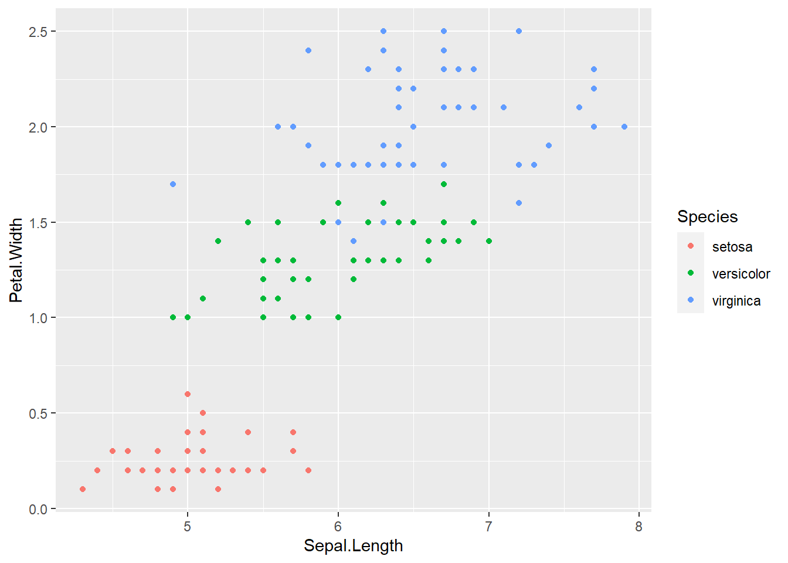
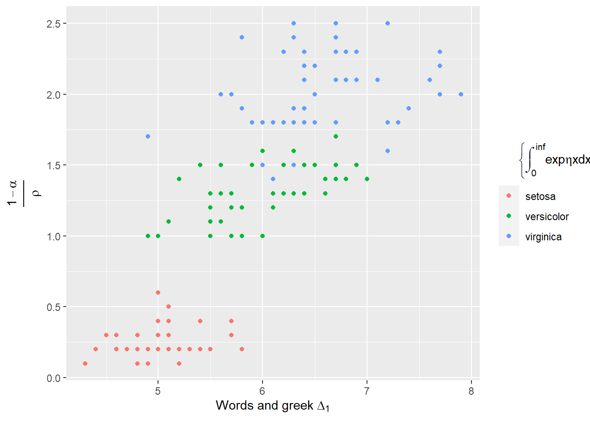

Math and greek in legends
The issue
I often need math in ggplot labels. Sometimes it’s actual math, but often just things like greek letters, subscripts, fractions, hats, bars, etc. THere’s ways to do most of that with expression and paste and bquote, but none of it is ever very intuitive for me. I’d like to be able to just send it latex and have it work.
Does latex2exp work?
Using latex2exp
library(ggplot2)
library(latex2exp)Let’s just try to do some things with that. Make the usual iris plot.
testplot <- ggplot(iris, aes(x = Sepal.Length, y = Petal.Width, color = Species)) +
geom_point()
testplot
Now let’s add some math. I’d typically use labs for the x,y, and color, so try that. Spacing not great, but it works.
Basically following the manual, it’s pretty self-explanatory.
The r says to use raw strings so don’t have to escape slashes.
testplot <- testplot +
labs(x = TeX(r'(Words and greek $\Delta_1$)'),
y = TeX(r'($\frac{1-\alpha}{\rho})'),
color = TeX(r'($\left{ \int_0^\inf \exp{\eta x} dx \right})'))
testplot
Can I use amsmath in latex? Maybe, but not for linebreaks- this errors.
testplot <- testplot +
labs(x = TeX(r'(Words and greek $\Delta_1$)'),
y = TeX(r'($\frac{1-\alpha}{\rho}$)'),
color = TeX(r'($\begin{split}\left{ \int_0^\inf \\ \exp{\eta x} dx \right}\end{split}$)'))
testplot